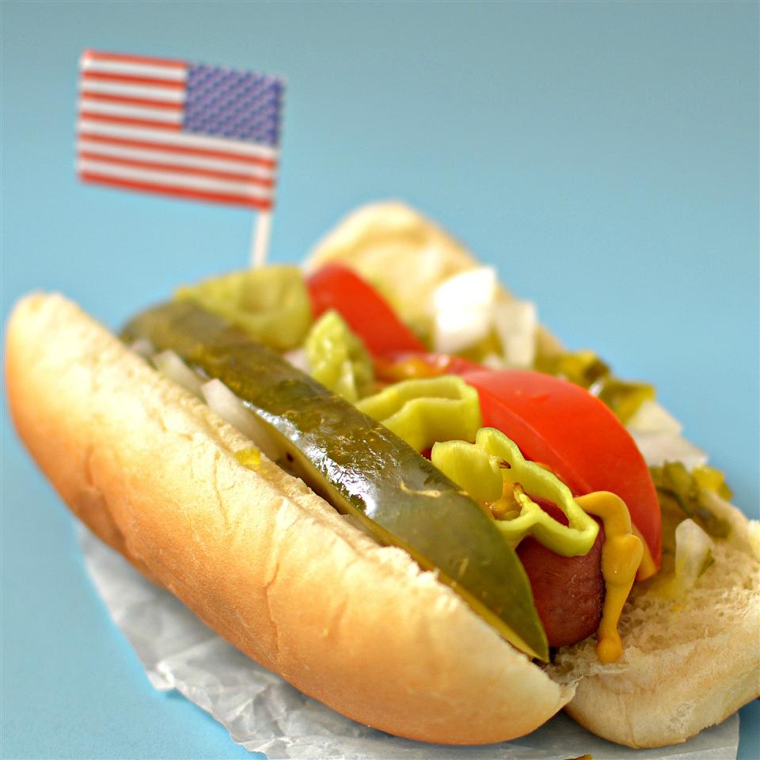

Hotdogs
Original Website

Boiling hotdogs is the tried and true method for procuring large quantities of hot dogs.
They're fast, easy, and tasty!
Ingredients
- Hotdogs
- Hotdog bread
- Water
- Condiments (Ketchup, mustard, relish, sauerkraut, etc...)
Equipment
Instructions
- Fill pot with enough water to cover hotdogs
- Bring water to a boil
- Add hot dogs one at a time using tongs
- Reduce heat to the low setting and allow the hot dogs to simmer from anywhere from 3 to 6 minutes)
- Once they're done, use tongs to remove them from the water and pat them dry with paper towels